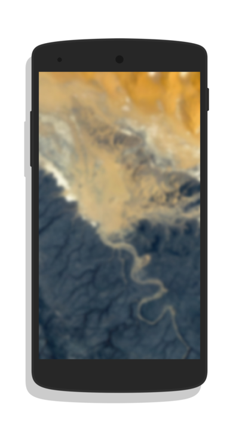

Loading Patterns...
Android Pattern Visualizer
Random
Sequential
This project would not have been possible without
Vivus
,
Screener
,
Google EarthView
and the
pretty radio button by skeddless
Visualizer
|
Generator
 Visualizer | Generator
Visualizer | Generator
Visualizer | Generator
Visualizer | Generator